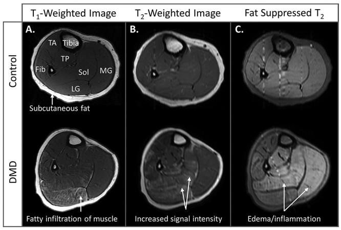
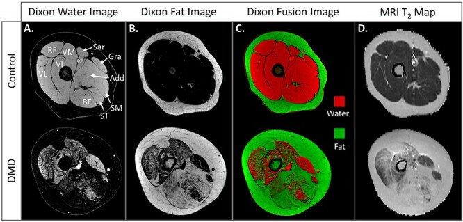

DMD Monitor
AI-Powered MRI Analysis for Duchenne Muscular Dystrophy
Patient ID
DMD-2024-0847
Age / Sex
12Y / M
Ambulatory Status
Late Ambulatory
Steroid Treatment
Deflazacort
Last Scan
2024-05-15
NSAA Score
18/34
42%
Fat Fraction
Moderate
58ms
T₂ Relaxation
Elevated
347cm²
Muscle Volume
Reduced
3.2
Edema Score
Mild
8%
Asymmetry Index
Normal
Lower Leg MRI Analysis
Screened by MyoMetrics • 07:12 pm, 05/02/22

Muscle Abbreviations
TA = Tibialis Anterior
TP = Tibialis Posterior
Fib = Fibularis
Sol = Soleus
MG = Medial Gastrocnemius
LG = Lateral Gastrocnemius
Healthy Control
Muscle
Fat %
T₂ Time
Tibialis Anterior
12%
30ms
Tibialis Posterior
15%
32ms
Fibularis
10%
29ms
Soleus
18%
33ms
Gastrocnemius
17%
34ms
DMD Patient
Muscle
Fat %
T₂ Time
Tibialis Anterior
45%
58ms
Tibialis Posterior
32%
48ms
Fibularis
68%
72ms
Soleus
55%
65ms
Gastrocnemius
71%
77ms
Dixon Imaging Study - Thigh Cross-Section
Comparative Analysis • MyoMetrics
Figure 2: Dixon MRI Imaging Comparison
Control (9y) vs DMD (10y) - Thigh Cross-Sectional Analysis

Technical Specifications
Dixon Imaging
Chemical shift-encoded MRI separating water/fat signals
Fat Fraction
Quantitative % intramuscular fat
T₂ Values
Normal: 30-35ms | Affected: 35-80ms
Functional Correlation Thresholds
~10%
Running with flight phase (VL fat)
~20%
Running without flight phase (VL fat)
~40%
Loss of ambulation begins (quadriceps)
~70%
Walking with compensation (quadriceps)
>75%
Loss of floor rise (gluteus maximus)
Age-Related Progression
1-2y
13/14 children show gluteus maximus infiltration
3-4y
Biceps femoris fat infiltration onset
5-6y
Vastus lateralis involvement in most boys
9-10y
>90% have >60% gluteus maximus replacement
Muscle Involvement Patterns
Most Affected
Rectus femoris, Vastus muscles, Biceps femoris
Moderately Affected
Adductor group, Semimembranosus
Relatively Spared
Sartorius, Gracilis, Semitendinosus
Disease Progression Timeline
Baseline
6 months
12 months
18 months
24 months
15%
Fat Fraction
22%
Fat Fraction
31%
Fat Fraction
42%
Current
55%
Predicted
🤖 AI Clinical Insights
Critical Finding
Gastrocnemius muscles show severe fatty infiltration (>65%) with high T2 values indicating ongoing inflammation. Immediate therapeutic intervention recommended.
Pattern Analysis
Distal-to-proximal progression pattern observed. Tibialis posterior showing relative preservation - potential compensatory mechanism detected.
Comparative Analysis
Patient's progression rate is 1.5x faster than cohort average. Consider escalating treatment protocol or clinical trial enrollment.
Therapeutic Target
Fibularis and soleus muscles in critical transition phase. Targeted physiotherapy and emerging therapies may preserve function.